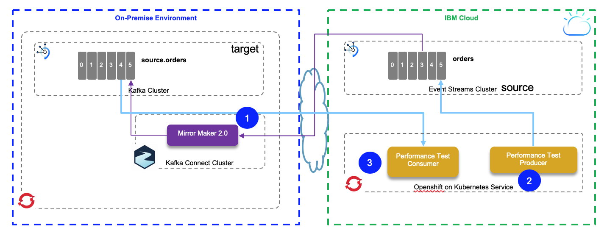
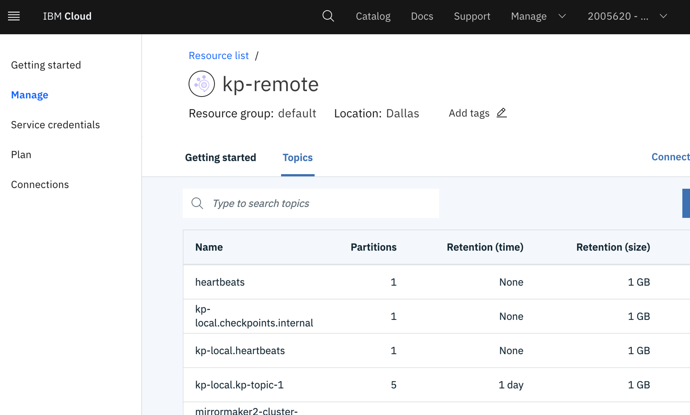
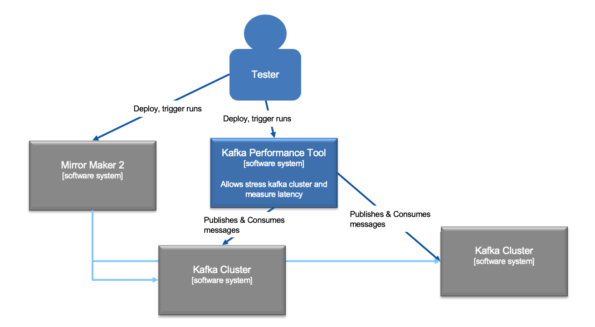
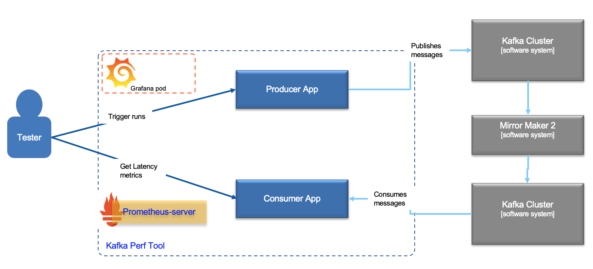
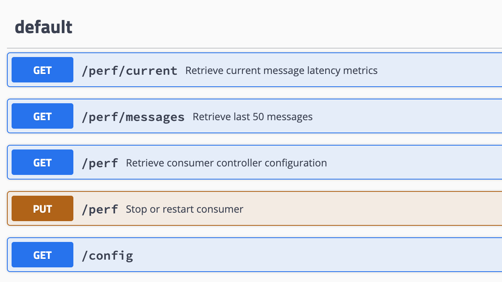
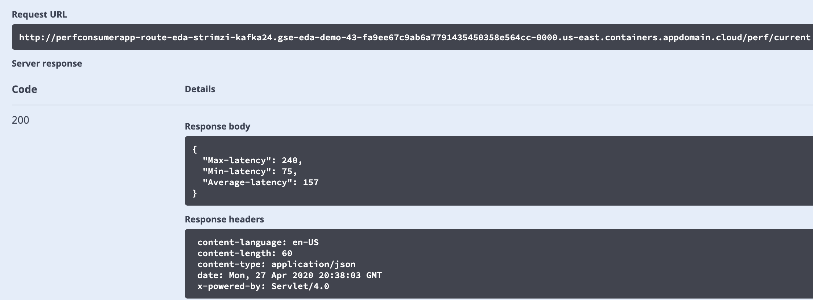
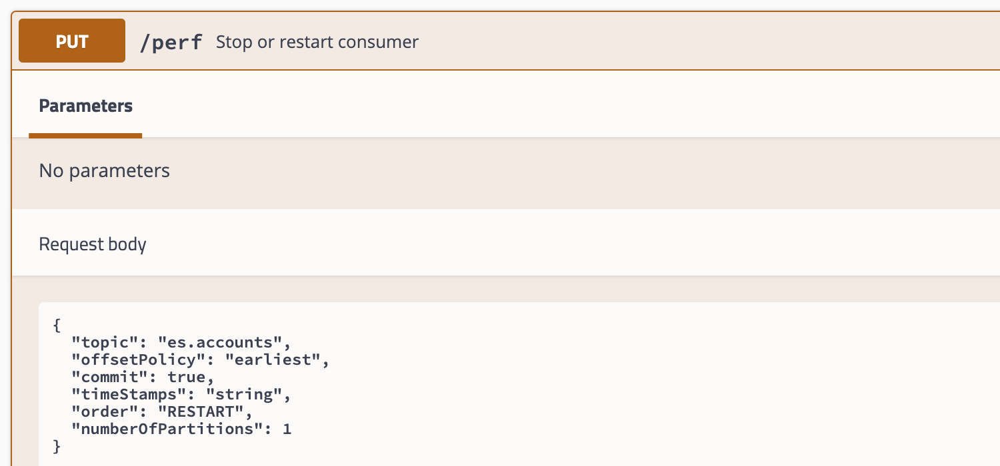

Validation and Performance tests
The mirroring validation and performance tests are based on the architecture depicted in the following figure, where MirrorMaker 2 is running close to the on-premise target cluster and the source is Event Streams on Cloud.

Validate the topic replication
Objective
Determine if MirrorMaker 2 can successfully replicate messages from a topic with n partitions on the source Kakfa cluster to a topic with n-m partitions on the target Kafka cluster.
Given
If given Manager rights on Event Streams, where Event Streams is the target Kafka cluster, MirrorMaker 2 will either create the target topic with n partitions or increase the number of partitions on the topic to n. Both of these default behaviours are proven.
Method 1
Create new Credential on IES on Cloud with Write permission, but not Manager permissions. Reconfigure MirrorMaker 2 with the new Credential. Create a new topic on IES on Cloud with 5 partitions that corresponds to a new topic on local Kafka with 10 partitions. Test replication from the local Kafka topic to the topic on IES on IBM Cloud. Observe any errors in MirrorMaker 2 log, and validate data replicates as expected.
Hypothesis
Data will replicate successfully.
The MirrorMaker 2 architecture uses Kafka Connect, and so simply acts as a 3rd party consumer of topic data on the source side and writes to the topic on the target side as any other producer would. Given sufficient partitions on each of the source and target topics for MirrorMaker 2 to act as a consumer (on the source side) and a producer (on the target side), how many total partitions each side has should not be a factor.
Method 2
Create new Credential on IES on Cloud with Write permission, but not Manager permissions. Reconfigure MirrorMaker 2 with the new Credential. Create a new topic on IES on Cloud with 10 partitions that corresponds to a new topic on local Kafka with 5 partitions. Test replication from the local Kafka topic to the topic on IES on IBM Cloud. Observe any errors in MirrorMaker 2 log, and validate data replicates as expected.
Hypothesis
(Same as previous hypothesis)
Data will replicate successfully. The MirrorMaker 2 architecture uses Kafka Connect, and so simply acts as a 3rd party consumer of topic data on the source side and writes to the topic on the target side as any other producer would. Given sufficient partitions on each of the source and target topics for MirrorMaker 2 to act as a consumer (on the source side) and a producer (on the target side), how many total partitions each side has should not be a factor.
Method 1 - Implementation
-
Get API KEYS and BROKERS URL for Event Streams
{ "api_key": "_V...d", "apikey": "_VX...d", "iam_apikey_description": "Auto-generated for key ab427...6140e186969", "iam_apikey_name": "kp-writer", "instance_id": "7.....", "kafka_admin_url": "https://2ym....krl.svc03.us-south.eventstreams.cloud.ibm.com", "kafka_brokers_sasl": [ "broker-3-2ymhj.....kafka.svc03.us-south.eventstreams.cloud.ibm.com:9093", "broker-4-2ymhj....kafka.svc03.us-south.eventstreams.cloud.ibm.com:9093", "broker-1-2ymhjg....kafka.svc03.us-south.eventstreams.cloud.ibm.com:9093" ], "kafka_http_url": "https://2ym....krl.svc03.us-south.eventstreams.cloud.ibm.com", "password": "_...", "user": "token" }
-
Create a topic with 10 partitions on source cluster (e.g. kp-topic-1)

It could be done using CLI like:
./kafka-topics.sh --bootstrap-server eda-demo-24-cluster-kafka-bootstrap:9092 --create --partitions=10 --topic kp-topic-1
- Create a topic with 5 partitions on target cluster (e.g. kp-local.kp-topic-1)

If you need to look at the topic information using the shell command use something like:
./kafka-topics.sh --bootstrap-server eda-demo-24-cluster-kafka-bootstrap:9092 --describe --topic source.accounts Topic: source.accounts PartitionCount: 5 ReplicationFactor: 3 Configs: message.format.version=2.4-IV1 Topic: source.accounts Partition: 0 Leader: 0 Replicas: 0,2,1 Isr: 0,2,1 Topic: source.accounts Partition: 1 Leader: 2 Replicas: 2,1,0 Isr: 2,1,0 Topic: source.accounts Partition: 2 Leader: 1 Replicas: 1,0,2 Isr: 1,0,2 Topic: source.accounts Partition: 3 Leader: 0 Replicas: 0,1,2 Isr: 0,1,2 Topic: source.accounts Partition: 4 Leader: 2 Replicas: 2,0,1 Isr: 2,0,1
- Create a MirrorMaker 2 configuration to replicate the topic
Python based test approach
This test is in the perf-tests/ValidateTopicReplication folder, and aims to validate the 10 partition topic to 5 partition topic replication.
- Send 500 records to the source topic using the producer code: ProducerPerformance.py
- Start the consumer on target topic in a unique consumer group so it gets the messages from all the 5 partitions, compare the number of message received: it should be 500.
The procedure is:
-
export the environment variable to access target cluster:
export KAFKA_BROKERS=broker-3-h6s2xk6b2t77g4p1.kafka.svc01.us-east.eventstreams.cloud.ibm.com:9093,broker-1-h6s2xk6b2t77g4p1.kafka.svc01.us-east.eventstreams.cloud.ibm.com:9093,broker-0-h6s2xk6b2t77g4p1.kafka.svc01.us-east.eventstreams.cloud.ibm.com:9093,broker-5-h6s2xk6b2t77g4p1.kafka.svc01.us-east.eventstreams.cloud.ibm.com:9093,broker-2-h6s2xk6b2t77g4p1.kafka.svc01.us-east.eventstreams.cloud.ibm.com:9093,broker-4-h6s2xk6b2t77g4p1.kafka.svc01.us-east.eventstreams.cloud.ibm.com:9093 export KAFKA_APIKEY="event stream apikey"
Export the environment variables to point to the source cluster:
export KAFKA_SRC_CERT=/home/ca.crt export KAFKA_SRC_BROKERS=eda-demo-24-cluster-kafka-bootstrap-eda-strimzi-kafka24.gse-eda-demo-43-fa9ee67c9ab6a7791435450358e564cc-0000.us-east.containers.appdomain.cloud
-
Start consumer:
Start the consumer to run locally but remote connected to the kafka cluster:
docker run -ti -v $(pwd):/home -e KAFKA_BROKERS=$KAFKA_TGT_BROKERS -e KAFKA_CERT=$KAFKA_TGT_CERT ibmcase/python37 bash -c "python /home/PerfConsumer.py --topic source.accounts"
Or run the consumer inside openshift
oc run kafka-consumer -ti --image=strimzi/kafka:latest-kafka-2.4.0 --rm=true --restart=Never -- bin/kafka-console-consumer.sh --bootstrap-server $KAFKA_TGT_BROKERS --topic source.accounts --from-beginning
-
Start producer
docker run -ti -v $(pwd):/home -e KAFKA_BROKERS=$KAFKA_SRC_BROKERS ibmcase/python37 bash -c "python ProducerPerformance.py --file /home/ValidateTopicReplication/testplayload.json --size 500 --keyname identifier --topic accounts"
The number of records on the consumer side should match the number send (e.g. 500), but this time read from 5 partitions.
Conclusion Method 1
Hypothesis proven - MirrorMaker 2 can replicate from a local topic with 10 partitions to a remote topic with 5 partitions.
Java based performance tests
The performance testing in java is based on two tools: the IBM Event Stream tool which is itself based on the Apache Kafka producer performance tool and a custom consumer app, deployable on kubernetes cluster and that support latency reporting.
Context
The following diagram illustrates the performance test app context, with the two kafka clusters and the MirrorMaker tool:

Zooming into the system, we define the producer and consumer apps and we may add metrics reporting consumable by using dashboard.

For the app producer, we have two options:
- One using the Event Streams sample producer that is a wrapper on top of Kafka producer performance tool that we cloned in the perf-test/event-streams-sample-producer folder.
- Use a simple java producer that can play a basic String payload and set timestamp in records. The code is under
perf-producer-appfolder.
The Event Stream sample producer tool reports test metrics like records per second, number of records sent, the megabytes per second, the average and maximum latencies, from the producer.metrics() and other stats from the tools.
The arguments supported are:
| Argument | Description |
|---|---|
--record-size value> or --payload-file filename |
one is mandatory but not both. Work only for UTF-8 encoded text files |
--topic name |
mandatory |
--num-records value |
mandatory |
--payload-delimiter char |
delimiter to be used when --payload-file is provided. Default is \n |
--throughput value |
Throttle to value messages/sec. -1 to disable throtlling |
--producer.config filename |
producer config properties file |
--producer-props prop_name=value |
producer configuration properties |
--print-metrics true|false |
Default to true |
--transactional-id value |
Test with transaction |
--transaction-duration-ms value |
The max age of each transaction. Test with transaction if v>0 |
To completement this tool, the consumer app is responsible to measure some of the latency between given timestamps. The following diagram presents the interesting time stamps we can assess with some tooling:

- ts-1: timestamp when creating the record object before sending
- ts-2: record timestamp when broker write to topic-partition: source topic
- ts-3: record timestamp when broker write to topic-partition: target topic
- ts-4: timestamp when polling the record
To get timestamp at the topic level, we need to add the message.timestamp.type: LogAppendTime property when creating the topic.
The consumer needs to be deployable on OpenShift to scale horizontally. The metrics can be exposed as metrics for Prometheus. The metrics are: average latency, min and max latencies.
The performance test consumer webapp is under the perf-tests/perf-consumer-app folder. The readme, in this folder, explains how to build and deploy it.
Test approach
- Using Event Stream sample producer:
Using IBM event streams producer tool we can run 3 different workload size, the payload is generated with random bytes or with records read from a data file.
java -jar target/es-producer.jar -t accounts -s small java -jar target/es-producer.jar -t accounts -s medium java -jar target/es-producer.jar -t accounts -s large
To build the jar,run mvn package in the event-streams-sample-producer-1.1.0 folder.
Here is an example of call to this performance producer
java -jar event-streams-sample-producer-1.1.0/target/es-producer.jar --payload-file ./data/records.json -t topic --producer-config ../mirror-maker-2/eventstream.properties
The eventstream.properties file define the bootstrap.servers, sasl configuration using Event Streams credentials and URLs. Something like:
bootstrap.servers=broker-3-.....eventstreams.cloud.ibm.com:9093 security.protocol=SASL_SSL ssl.protocol=TLSv1.2 sasl.mechanism=PLAIN sasl.jaas.config=org.apache.kafka.common.security.plain.PlainLoginModule required username="token" password="<replace with APIKAY>";
The tool reports the following measures:
1261 records sent, 251.8 records/sec (0.97 MB/sec), 2233.3 ms avg latency, 3320.0 max latency. 2848 records sent, 569.5 records/sec (2.19 MB/sec), 5797.0 ms avg latency, 8294.0 max latency. 2840 records sent, 567.8 records/sec (2.19 MB/sec), 10760.9 ms avg latency, 13288.0 max latency. .. 60000 records sent, 490.869821 records/sec (1.89 MB/sec), 14698.93 ms avg latency, 24949.00 ms max latency, 14490 ms 50th, 22298 ms 95th, 23413 ms 99th, 24805 ms 99.9th.
- Using the producer coder under the
perf-producer-appfolder:
java -jar ... tools.ProducerTestTool --num-records 500 --topic accounts --bootstrap <eventstream-broker-list> --apiKey <eventstream-apikey>
Measuring with consumer app
The consumer app offers an API to get performance metrics via HTTP or via metrics.

The ones interesting are: /perf/config to get the cluster configuration, it should return a json document like
{ "ssl.protocol": "TLSv1.2", "sasl.mechanism": "PLAIN", "key.deserializer": "org.apache.kafka.common.serialization.StringDeserializer", "client.id": "test-cons-group-client-a425be84-801b-42b5-af2f-340386f98896", "ssl.truststore.password": "password", "ssl.endpoint.identification.algorithm": "HTTPS", "ssl.enabled.protocols": "TLSv1.2", "ssl.truststore.location": "/home/truststore.jks", "bootstrap.servers": "eda-demo-24-cluster-kafka-bootstrap-eda-strimzi-kafka24.gse-eda-demo-43-fa9ee67c9ab6a7791435450358e564cc-0000.us-east.containers.appdomain.cloud:443", "auto.offset.reset": "earliest", "value.deserializer": "org.apache.kafka.common.serialization.StringDeserializer", "group.id": "test-cons-group", "enable.auto.commit": "false", "security.protocol": "SSL" }
/perf/current for getting the current metrics vias HTTP. Here is an example of output

Finally the application can be restarted to process from another topic using a PUT on /perf:

The parameters are the topic name, the number of partition on this topic, and to commit the offset or not, and what is the offset policy to be used (earliest, latest). The timestamp is to specify from which timestamp to measure the latency from (TS1, TS2, TS3 in the time figure above, default is TS2).
Putting all together
So with those tools we can have a performance testing framework that works like this:
- Deploy MirrorMaker2 instance
- Deploy a performance consumer application on a cluster and connected to the target topic, define the number of partitions of the topic as parameter
- Start the producer
- Look at the REST API or Prometheus metrics.